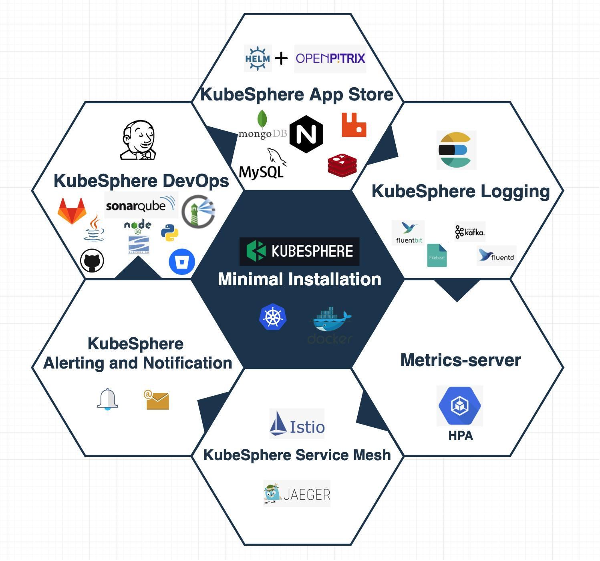

KubeSphere 使用外置 Jenkins

相信很多 KubeSphere 的用户之前在以 Jenkins 作为 CI/CD 工具，但是，KubeSphere 默认会安装一个新的 Jenkins，无法直接使用已有的 Jenkins 作为 CI/CD 引擎。这对于希望能上生产，但是又不方便迁移已有流水线的用户来说，还是有很多不方便的地方。本文的目标，就是给大家提供一个让 KubeSphere 可以使用外置 Jenkins 的方案。
限制
该方案并不是一个完美的终极方案，因此，在你开始使用外置 Jenkins 之前，请先评估下面的限制：
- KubeSphere 上已有的流水线将会无法使用
- 如果你已有的 Jenkins 中安装了不兼容的插件，可能会导致部分功能无法使用
- 不会把旧的 Jenkins 上的流水线迁移到 KubeSphere 上
鉴于方案可能会有如上所属的风险，请*不要*直接在你的生产环境上操作！另外，请确保你有一个备份环境，并且在备份环境上进行如下的方案实施。
实验环境
CentOS Linux release 7.9.2009 (Core)
安装依赖：
yum update -y && yum install wget curl vim bash-completion -y
安装 KubeSphere
为了不影响已有的业务，我们最好还是找个空白的环境，安装一个新的 KubeSphere 会比较稳妥。下面，我们首先把安装工具 kk 下载好。值得一提的是，KubeSphere 社区为了能够让用户更方便地体验到最新交付的 feature 或者修复的缺陷，提供了每日构建版，也就是所谓的：nightly build。想要体验找个 nightly build 最好的办法是使用最新开发中的的 kk。
需要注意的是，下面的链接是我个人编译出来的二进制文件，并不是社区发布的正式版本，仅供学习使用。
wget https://github.com/LinuxSuRen/kubekey/releases/download/v1.0.4/kubekey-v1.0.4-linux-amd64.tar.gz
tar xzvf kubekey-v1.0.4-linux-amd64.tar.gz
mv kubekey /usr/local/bin/kk
为了方便使用，我们可以先把命令行自动补全配置好：source <(kk completion --type bash)
相信本文的读者大部分是在国内，访问某些网络可能会有问题，让我们添加一个环境变量来解决网络的问题：export KKZONE=cn
kk create cluster --with-kubesphere nightly-20210103 -y
你可以把上面命令的日期修改为昨天，或者，让命令行自动补全帮你。
开启 DevOps 组件
你可以按照社区官方文档中给出的步骤来操作，如果你不想再看更多的文档的话，可以试试通过命令行来一键开启。
安装 kubectl 插件：
wget https://github.com/LinuxSuRen/ks/releases/download/v0.0.11/kubectl-ks-linux-amd64.tar.gz
tar -xzvf kubectl-ks-linux-amd64.tar.gz
mv kubectl-ks /usr/local/bin/
启用 DevOps：
kubectl ks com enable devops
等待组件启动完成：
kubectl logs -n kubesphere-system deploy/ks-installer -f --tail=50
当你看到类似如下的输出时，就说明组件启用成功：
#####################################################
### Welcome to KubeSphere! ###
#####################################################
Console: http://192.168.0.6:30880
Account: admin
Password: P@88w0rd
NOTES：
1. After you log into the console, please check the
monitoring status of service components in
"Cluster Management". If any service is not
ready, please wait patiently until all components
are up and running.
2. Please change the default password after login.
#####################################################
https://kubesphere.io 2021-01-05 10:40:32
#####################################################
外置 Jenkins
前面我们已经做了很多的准备工作，现在终于开始动手集成外置 Jenkins 了。
步骤
假设，你的外置 Jenkins 是通过这个命令安装的（如果你正好有一个可以做测试的外置 Jenkins 的话，可以跳过下面的步骤）：
jcli center start -m docker --c-user root --image jenkinszh/jenkins-k8s --version 2.249.1 --sys hudson.security.csrf.DefaultCrumbIssuer.EXCLUDE_SESSION_ID=true
请根据官方文档配置好 jcli 。基本上，你需要做两件事：下载、通过命令来配置连接信息：jcli config gen。
如果你的环境直接访问互联网的话，安装 KubeSphere 所需要的插件就非常简单：
git clone https://github.com/kubesphere/ks-jenkins
jcli plugin install --formula ks-jenkins/formula.yaml
安装插件可能需要花点时间，具体依赖于你的网络带宽。jcli 可以通过读取 YAML 配置文件 ks-jenkins/formula.yaml 安装所有的插件。
接下来，需要手动配置 Jenkins。你需要关注两件事情：配置 KubeSphere Jenkins Auth 并启用，提供 KubeSphere API Gateway，也就是 ks-apiserver 所暴露的端口。另一个重要的部分是 Kubernetes 配置，请确保它至少包含这些 podTemplates base, nodejs, maven and go 。你可以从 KubeSphere 默认安装的 Jenkins 中的 podTemplates 了解到如何配置。
当你完成了上面的配置，而且所有插件都已经安装成功后，重启 Jenkins。重启的方法有很多，但还是提供一个比较优雅的吧：jcli restart -b
最后，修改 configmap kubesphere-system/kubesphere-config 中 Jenkins 的连接信息。从 data.kubesphere.yaml 中找到 devops.host ，把它修改为你期望使用的 Jenkins 的地址。为了让修改生效，我们还需要重启 ks-apiserver ，命令为： kubectl rollout restart -n kubesphere-system deploy ks-apiserver。
完成上面的步骤后，创建一个新的流水线，你就会发现已经关联到了新的 Jenkins 上了。
写在最后
安装一个全新的，通常是一件相对比较容易的事情。但是，想要平滑地把已有的组件做迁移的话，则可能会遇到各种问题。非常欢迎看到本文的读者和我一起解决上面提到的几个限制因素。